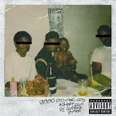

Good Kid M.A.A.d City
Kendrick Lamar
Label: Interscope Records
Released: Oct 22, 2012
Country: US
Style: Hip-Hop
Tracklist:
A1 Sherane A.K.A Master Splinter's Daughter 4:33A2 Bitch, Don't Kill My Vibe 5:10
A3 Backseat Freestyle 3:32
A4 The Art Of Peer Pressure 5:24
B1 Money Trees 6:24
B2 Poetic Justice 5:00
B3 Good Kid 3:34
B4 M.A.A.d City 5:50
C1 Swimming Pools (Drank) (Extended Version)5:13
C2 Sing About Me, I'm Dying Of Thirst 12:03
C3 Real 7:23
D1 Compton 4:08
D2 The Recipe 5:52
D3 Black Boy Fly 4:38
D4 Now Or Never 4:17